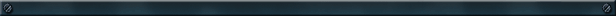

■ジニアス・ソノリティさんは、昨年設立された会社なんですね。
 山名 はい。昨年６月頃に株式会社ポケモンさんの方から「新しいポケモンソフトを作って欲しい」と頼まれまして。「じゃあ、もう会社を作っちゃおう」ということになって、いまに至ります。"ソノリティ"は響鳴というような意味なんですが、ちょっと語呂が物足りない感じなので、そこに『天才』をくっつけて"ジニアス・ソノリティ"という社名にしました。 山名 はい。昨年６月頃に株式会社ポケモンさんの方から「新しいポケモンソフトを作って欲しい」と頼まれまして。「じゃあ、もう会社を作っちゃおう」ということになって、いまに至ります。"ソノリティ"は響鳴というような意味なんですが、ちょっと語呂が物足りない感じなので、そこに『天才』をくっつけて"ジニアス・ソノリティ"という社名にしました。
折尾 こういったことはすごく稀なことだと思うんですが、ゲームづくりに関わる各分野のエキスパートが、つぎのステップに移るタイミングでこの会社ができた、という感じですね。
■『ポケモンコロシアム』はどういう経緯で作られたんでしょうか？
 山名 まず「新しいポケモンソフトを」というお話が来たところからですね。じゃあどうしようかということになって、三浦がゲームコンセプトを作りました。 山名 まず「新しいポケモンソフトを」というお話が来たところからですね。じゃあどうしようかということになって、三浦がゲームコンセプトを作りました。
三浦 これまでのポケモンの世界とはちょっと違う、少し背伸びしたストーリーを作りたいなというのがあって。だから主人公の年齢も17歳くらいで、服の色もややダークというか、少しお兄さんというか。内容的にも、"スナッチ"という要素が入ってきますから、いままでのポケモンワールドのイメージとはちょっと違うかもしれません。
山名 コンセプトができたので、つぎは世界観などをまず作る段階ですね。そこで三浦がヒロモトさんに声をかけました。
ヒロモト このお話を頂いた時から、どういったものができあがってくるか、というような明確なヴィジョンや到達点が僕のなかである程度わかっていたんです。そういったこともあって参加させて頂いたんですが、いまできてきているものを見ても、自分が最初に思った通りのものが出来上がってきているので、非常に満足しています。
 三浦 僕は以前から、ヒロモトさんの描く世界に注目していました。とがっているというか、緻密な世界でありながらも、インパクトあるキャラを使って漫画を描く方だなと思って。コンセプトを僕のほうからお話しして、できあがってきた世界やキャラクターというのが、"乾いた感じ、砂漠のような世界"だったんです。はっきり言ってしまうと『ぶっ飛んでる』。やっぱりいままでのポケモンとは違う世界だったんです。 三浦 僕は以前から、ヒロモトさんの描く世界に注目していました。とがっているというか、緻密な世界でありながらも、インパクトあるキャラを使って漫画を描く方だなと思って。コンセプトを僕のほうからお話しして、できあがってきた世界やキャラクターというのが、"乾いた感じ、砂漠のような世界"だったんです。はっきり言ってしまうと『ぶっ飛んでる』。やっぱりいままでのポケモンとは違う世界だったんです。
山名 で、つぎにシナリオを載せないといけないわけです。長年一緒に仕事をしていた折尾さんを、「ちょっと飲みに行かない？」って感じで誘いました。折尾さんはゲームのシステムを考えてシナリオづくりをしてくれる人なので…。
折尾 ポケモンというのは世界観が既に確立しているので、そのベースの上で新しいことをどこまでやれるのかという部分をちょっと考えていたんです。でも、ヒロモトさんが作ったイメージイラストやキャラクターを見て、「あ、ポケモンの世界の基本線を守れば、これは自由にやっちゃっていいんだな」と。これまでのRPGや、もちろんポケモンワールドにもないものになったと思うので、ユーザーにどう受け入れてもらえるかが楽しみです。
山名 ぶっ飛んだイラストと世界にシナリオを乗せて…と来たら、つぎは音楽になるわけです。
 多和田 三浦がコンセプトを打ち出して、ヒロモトさんがアートやイラストを見せてくれたので、作る音楽の方向性が見えてきたんですね。それらを見ていたら、自分が子供の頃抱いていた「大人の世界を背伸びして覗いてみたい」というような、とても懐かしい気持ちになりました。だから都会的な、乾いた感じのする大人の世界を見せよう、と。この世界のモデルはアメリカのアリゾナ州フェニックスをイメージしてるんですよ。 多和田 三浦がコンセプトを打ち出して、ヒロモトさんがアートやイラストを見せてくれたので、作る音楽の方向性が見えてきたんですね。それらを見ていたら、自分が子供の頃抱いていた「大人の世界を背伸びして覗いてみたい」というような、とても懐かしい気持ちになりました。だから都会的な、乾いた感じのする大人の世界を見せよう、と。この世界のモデルはアメリカのアリゾナ州フェニックスをイメージしてるんですよ。
■音楽を作るというと、よく「産みの苦しみ」という言葉を聞きますが…。
 多和田 僕はそういうタイプではなくて、とくに今回は楽しく作業ができたんですね。チームワークが良かったからだと思います。10日で５曲作らないといけない、ということになったりしましたが、それでも楽しかったですよ(笑)。 多和田 僕はそういうタイプではなくて、とくに今回は楽しく作業ができたんですね。チームワークが良かったからだと思います。10日で５曲作らないといけない、ということになったりしましたが、それでも楽しかったですよ(笑)。 |
 |